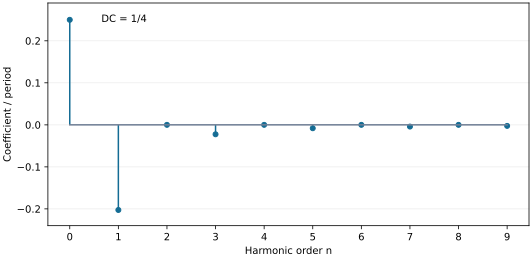

题干与必要原图先展示，课件原解、补充解析按需展开。讲授演算单列，不另计为独立练习。
原例题与课堂提问
讲授演算与原页验证要求
11-6-题01 · 周期三角波的傅立叶表达式与频谱
原例一 · §11-6 光波的傅立叶分析.ppt · 原幻灯片P7
〔例一〕求如图所示周期性三角函数的傅立叶分析表达式，并绘制其频谱图。
 原P7局部裁图；未改连接、方向或数据。横轴z，纵轴E(z)；周期λ，z=0处为0，z=±λ/2处为λ/2。
原P7局部裁图；未改连接、方向或数据。横轴z，纵轴E(z)；周期λ，z=0处为0，z=±λ/2处为λ/2。
图示一个周期内

（

），周期延拓。原页未另给电场与长度的单位换算，保留其数学归一化。
使用条件：周期、峰位和高度均依原图；保留E(z)=|z|的数学归一化，不自行补物理单位。
知识点：傅立叶级数 · 偶函数 · 分部积分 · 带符号频谱
课件原解答 / 原讲授与备注
对应原页：P7
补充解析（伴读解释）
读图
原点是谷底，半周期处是峰；不能把它换成零均值的对称三角波。偶函数只需算余弦系数。
常数项
 ，放进级数后的直流项为
，放进级数后的直流项为 。
。
余弦系数
分部积分给
端点 ，于是
，于是
偶n为0，奇n为负。负号代表相应余弦分量的π相位；不能说振幅模是负的。
画谱
零频竖线高度；在 画系数
画系数 ，其余为0。如果画幅度谱
，其余为0。如果画幅度谱 ，这些线改向上，并另记录相位π。下图是公式计算的带符号系数图，不是仿真或实验。
，这些线改向上，并另记录相位π。下图是公式计算的带符号系数图，不是仿真或实验。

横轴为谐波序号n，纵轴按λ归一化；n=0实际显示直流项A₀/2。
检查
z=0时常数项与全部奇次余弦项相消，z=λ/2时相加到λ/2，符合原图。连续但有尖角，所以高次系数按1/n²下降。
尚未核实或与原页的差异：原图直流线标A₀，与级数直流A₀/2需区分。
11-6-题02 · 何谓实际光波，何谓理想光波
原备注课堂提问 · §11-6 光波的傅立叶分析.ppt · 原幻灯片P11
原P11关联备注：“何谓实际光波，何谓理想光波？”
同一备注另列“自然加宽、碰撞加宽、”，没有给数值或完整练习条件。
使用条件：定性课堂提问；无指定发光材料、时间和探测条件。
知识点：实际波列 · 理想单色波 · 准单色 · 线宽
课件原解答 / 原讲授与备注
P11用断续波列或衰减振荡描述实际发光；P13说 时
时 ，对应理想单色光。备注没有单独的答题稿。自然加宽的简化衰减模型在P14例二，碰撞只作提示，未另推线形。
，对应理想单色光。备注没有单独的答题稿。自然加宽的简化衰减模型在P14例二，碰撞只作提示，未另推线形。
对应原页：P11
补充解析（伴读解释）
理想单色波有确定单一频率并无限延续，是建模极限；实际有限持续或衰减的波列一般具有非零频宽。准单色只要求相对带宽很小，不等于严格零带宽。
应把“瞬时看起来是正弦”与“全时间严格单频”分开：截断和衰减的包络会带入邻近频率。还要区分某一次波列的频谱、许多发光事件的统计光谱和探测器的测量结果；本节只计算两种简化单波列模型。
11-6-题03 · 指数衰减波的频谱与功率谱
原例二 · §11-6 光波的傅立叶分析.ppt · 原幻灯片P14
使用条件：α>0；负时间复指数，变换核与谱峰位置须统一；原式为复场模型。
知识点：因果衰减波 · 傅立叶积分 · 洛伦兹谱 · 半高全宽
课件原解答 / 原讲授与备注
原P14写
图中谱峰在ω₀，标宽2α。积分核的负号与右边结果不一致；保留原页，不把下方修正标为课件原解。
 原幻灯片P14。原衰减场、原积分核、结果和谱图。
原幻灯片P14。原衰减场、原积分核、结果和谱图。对应原页：P14
补充解析（伴读解释）
尚未核实或与原页的差异：P14正变换积分核符号与其结果不一致；补充解析明确换约定。
11-6-演算01 · 周期矩形波的奇次谐波
课件讲授推导 · §11-6 光波的傅立叶分析.ppt · 原幻灯片P3、P4、P5、P6
P4–6分析周期λ的矩形波：0<z<λ/2时f(z)=+1，λ/2<z<λ时f(z)=−1，再周期延拓。求傅立叶系数并读离散谱，是原讲授过程，无独立例题标签。
使用条件：采用原图的奇对称矩形波、周期延拓；边界单点不影响系数。
知识点：奇函数 · 傅立叶系数 · 离散谱 · 部分和
课件原解答 / 原讲授与备注
 原幻灯片P4。原分段条件与Bₙ积分。
原幻灯片P4。原分段条件与Bₙ积分。 原幻灯片P5。原级数、部分和与复数形式。
原幻灯片P5。原级数、部分和与复数形式。 原幻灯片P6。原奇次频谱。
原幻灯片P6。原奇次频谱。对应原页：P3 · P4 · P5 · P6
补充解析（伴读解释）
取原点使函数为奇函数，则A₀=Aₙ=0。令k=2π/λ：
偶n项抵消，奇n项为4/(nπ)。谱线的横坐标是nk，纵坐标是正弦系数Bₙ。原P5的部分和逐渐逼近矩形；跳跃处值取0，边缘附近会有吉布斯振荡，不能期待有限项重建出绝对陡直边界。
检查：平均值为0，正负半周期对称；把全部谐波误写成n=1,2,3都会产生与原图不符的偶次分量。直流、余弦、正弦先用对称性筛选，再积分，可减少运算。
11-6-演算02 · 矩形函数的连续谱与sinc定义
课件讲授推导 · §11-6 光波的傅立叶分析.ppt · 原幻灯片P8、P9、P10
原P9取 在
在 内，其余为0，作空间傅立叶变换；P10比较波包和谱形。a是矩形宽度，不是振幅。
内，其余为0，作空间傅立叶变换；P10比较波包和谱形。a是矩形宽度，不是振幅。
使用条件：a>0，沿用空间正变换负号核；k为角空间频率。
知识点：矩形函数 · 连续谱 · sinc · 谱的宽窄
课件原解答 / 原讲授与备注
 原幻灯片P9。原矩形、谱曲线、sinc写法及定义。
原幻灯片P9。原矩形、谱曲线、sinc写法及定义。对应原页：P8 · P9 · P10
补充解析（伴读解释）
有限支撑把积分限缩到−a/2和a/2：
k=0用极限得A(0)=a；首对零点k=±2π/a。按课件明确写出的归一化定义sinc(x)=sin(πx)/(πx)，应为A(k)=a sinc[ka/(2π)]。若用λ=2π/k，可写a sinc(a/λ)；这里的λ只是该谱分量的波长，不是另设中心载波。
谱A(k)是实偶函数，旁瓣可正可负；功率谱为|A(k)|²，不能保留负值。a变小，k域零点向外移动，宽窄互换。量纲：输入高度为1时，A(k)单位m，ka无量纲。P10仅是定性比较图，没有足够数值去计算其中三种脉冲的精确宽度。
尚未核实或与原页的差异：P9的sinc自变量应结合其π归一化定义核对，不照搬含混排版。
11-6-演算03 · 有限波列的谱宽与单色性
课件讲授推导 · §11-6 光波的傅立叶分析.ppt · 原幻灯片P11、P12、P13
原P11–13取 时
时 ，其余为0，求连续谱、强度谱及有效宽度Δk、Δλ。此处A₀是波列振幅。
，其余为0，求连续谱、强度谱及有效宽度Δk、Δλ。此处A₀是波列振幅。
使用条件：矩形截断、复指数波列、同一空间k与λ约定；Δλ式需窄带近似。
知识点：有限波列 · 归一化谱 · 首零点半宽 · 准单色
课件原解答 / 原讲授与备注
 原幻灯片P11。有限波列与原变换积分。
原幻灯片P11。有限波列与原变换积分。 原幻灯片P12。归一化强度与第一零点宽度。
原幻灯片P12。归一化强度与第一零点宽度。对应原页：P11 · P12 · P13
补充解析（伴读解释）
中心谱模平方为4|A₀|²L²；除以它才得到原P12未写归一化说明的I(k)。第一零点满足|(k−k₀)L|=π，所以半宽Δk=π/L，全零点宽2π/L。
由 ，在Δk≪k₀时取绝对值得
，在Δk≪k₀时取绝对值得 。这里λ是与所用k相对应的波长；若改用真空波长及色散介质的时间频率，换算必须包含色散关系。2L趋大时相对谱宽减小，有限截断不会严格只剩一个单色分量。
。这里λ是与所用k相对应的波长；若改用真空波长及色散介质的时间频率，换算必须包含色散关系。2L趋大时相对谱宽减小，有限截断不会严格只剩一个单色分量。
11-6-演算04 · “易证”Δν=1/Δt的条件
课件明确要求验证的换算 · §11-6 光波的傅立叶分析.ppt · 原幻灯片P13
原P13在时间域对照后写：“易证：Δν=1/Δt”。Δt是波列持续时间，Δν是相应频率范围；原页没有进一步给验证步骤。
使用条件：矩形时间窗；Δν为中心到第一零点的半宽，非FWHM。
知识点：时间频谱 · 带宽 · 持续时间 · 宽度约定
课件原解答 / 原讲授与备注
 原幻灯片P13。原页空间/时间域对照和“易证”关系。
原幻灯片P13。原页空间/时间域对照和“易证”关系。对应原页：P13
补充解析（伴读解释）
把空间矩形截断换成时间矩形窗：在−Δt/2到Δt/2内取 ，外部为0。用正号时间正变换核，
，外部为0。用正号时间正变换核，
首零点满足 ，所以中心到第一零点的半宽Δν=1/Δt。移动时间窗的起点只改变谱相位，不改变这个强度宽度。单位Hz×s=1；持续越短，谱越宽。
，所以中心到第一零点的半宽Δν=1/Δt。移动时间窗的起点只改变谱相位，不改变这个强度宽度。单位Hz×s=1；持续越短，谱越宽。
原页没有在这句重述宽度定义，应接续P12的首零点半宽理解。若改成两侧零点间全宽，结果为2/Δt；若改成半高全宽或高斯包络，常数也会变。不要把该等式写成所有脉冲都满足的精确带宽定理。
完整点击播放未核验。
返回本课件课程目录
 ，给
，给 ；偶n的
；偶n的 ，奇n的
，奇n的 。因此
。因此![E(z)=\frac{\lambda}{4}-\frac{2\lambda}{\pi^2}[\cos kz+\frac{\cos3kz}{3^2}+\frac{\cos5kz}{5^2}+\cdots],\quad k=2\pi/\lambda.](../../assets/11-6/%E5%85%AC%E5%BC%8F-e31a12fa7ce76819.svg)


![A_n=\frac{4}{\lambda}\frac{(-1)^n-1}{(nk)^2}=\frac{\lambda[(-1)^n-1]}{n^2\pi^2}.](../../assets/11-6/%E5%85%AC%E5%BC%8F-768d2b0ab2539a4e.svg)
 时
时 ，
， 时为0。式中α为衰减因子。求该衰减波的频谱函数和强度（功率谱）函数。
时为0。式中α为衰减因子。求该衰减波的频谱函数和强度（功率谱）函数。


 在正ω₀处有谱峰，采用时间变换
在正ω₀处有谱峰，采用时间变换 ；逆变换核为负号。这与前面空间核的选择分别说明，不混用。
；逆变换核为负号。这与前面空间核的选择分别说明，不混用。![A(\omega)=a\int_0^\infty e^{-[\alpha+i(\omega_0-\omega)]t}dt=\frac{a}{\alpha+i(\omega_0-\omega)}.](../../assets/11-6/%E5%85%AC%E5%BC%8F-4f52e01be443f803.svg)
 ，谱峰位于−ω₀。两套约定都可用，原页把它们混在了一式里。
，谱峰位于−ω₀。两套约定都可用，原页把它们混在了一式里。![I(\omega)=a^2/[\alpha^2+(\omega-\omega_0)^2]](../../assets/11-6/%E5%85%AC%E5%BC%8F-5ed7ec0cf66ad2db.svg) ，是洛伦兹形。峰高
，是洛伦兹形。峰高 ；令它降到一半，得
；令它降到一半，得 ，所以半高全宽
，所以半高全宽 ，换成Hz为
，换成Hz为 。
。![B_n=\frac{2}{\lambda}[\int_0^{\lambda/2}\sin(nkz)dz-\int_{\lambda/2}^{\lambda}\sin(nkz)dz]=\frac{2[1-(-1)^n]}{n\pi}.](../../assets/11-6/%E5%85%AC%E5%BC%8F-e04108109e630adf.svg)

![A(k)=A_0\int_{-L}^{L}e^{-i(k-k_0)z}dz=2A_0L\frac{\sin[(k-k_0)L]}{(k-k_0)L}.](../../assets/11-6/%E5%85%AC%E5%BC%8F-b3ac6597381e5442.svg)
![A(\nu)=E_0\Delta t\frac{\sin[\pi(\nu-\nu_0)\Delta t]}{\pi(\nu-\nu_0)\Delta t}.](../../assets/11-6/%E5%85%AC%E5%BC%8F-2efa076ebf1cbe35.svg)